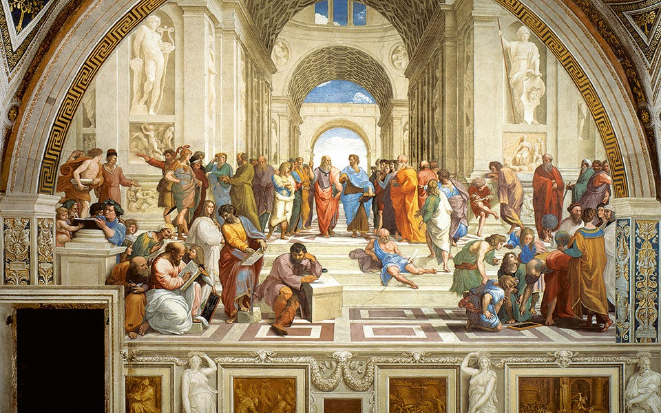
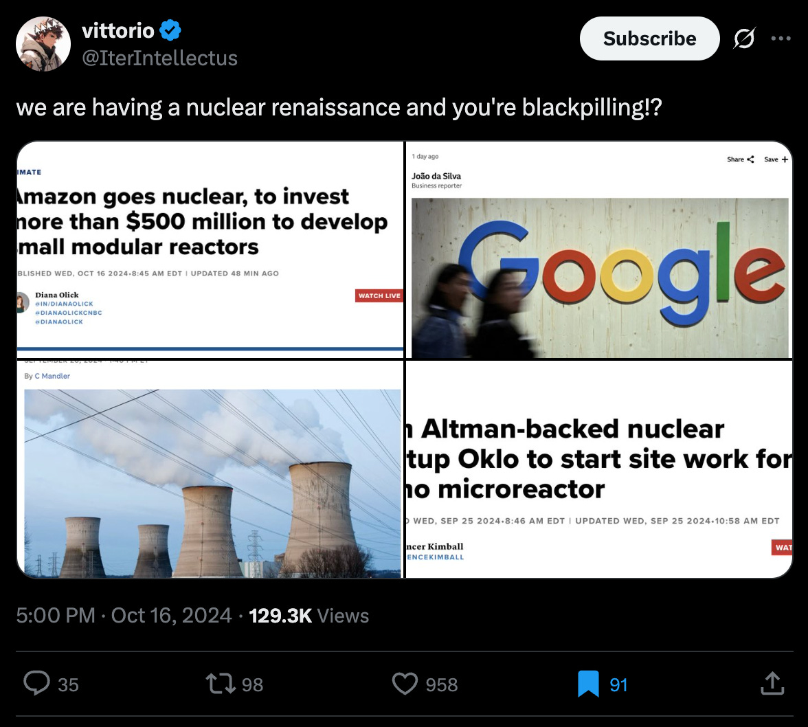
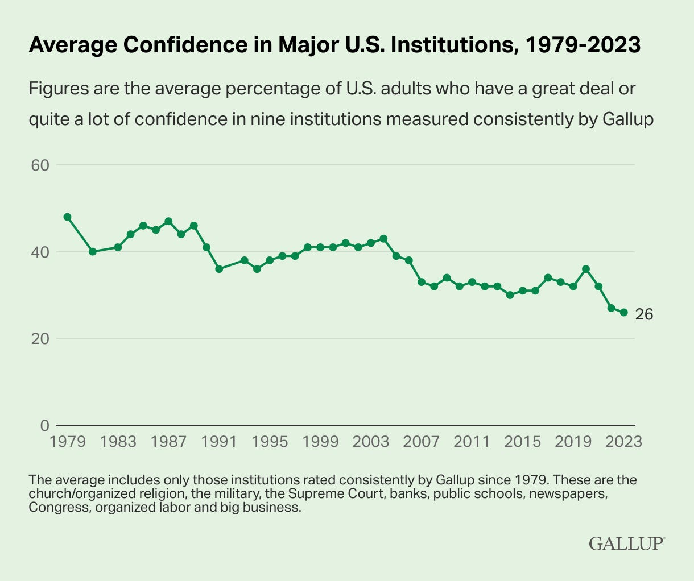
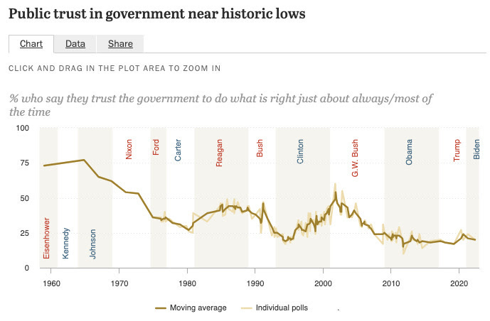

How Tech Redefines the Social Contract
How the world, with capitalism as its fuel, shifts to a new world order and leaves democracy and nation states as the primary geopolitical actors - behind
[Editorial note: This essay was originally written on 06/06/2023 but remained a draft due to its large scope. Publishing now, as it is increasingly becoming more relevant.]
I like reading history, and most recently - “Power and Thrones” by Dan Jones. The book explores the history of the Middle Ages, with the main narrative starting from the fall of the Western Roman Empire in 476 CE, through the Byzantines, the Arabs, the Franks, to the beginning of the Renaissance and the discovery of the New World.
Reading the rich history of that period, particularly the fall of the Roman Empire and its impact on the world for so many generations, makes you think differently about the world we live in: nothing is permanent. Everything is consistently changing - and sometimes, you need to look at a larger scale to see the big shift happening. Rome didn’t fall in a day but declined for generations, and so is the current world we all take for granted.
In this essay, I will explore how our world is changing, the powers that drive that change, and what might be ahead of us as a society, with the challenges we are already facing when going through these early days of the shift. Tech companies like Apple, Worldcoin, OpenAI, SpaceX, and others, including some individuals, are challenging everything we know about our world and institutions. In particular, the geopolitical actors involved with the social contract between citizens and governments.
Some of the changes are positive, some are less so. To start our journey, let’s first get some context for the world we are living in: The Modern State (Western Edition).

The Modern State (Western Edition) in a Nutshell
The political system we live under today, the modern state, is a relatively new creation. It’s a framework that claims full control over a defined territory, runs professional armies and tax systems, governs through law rather than whim, and is bound (at least on paper) by constitutions and elected institutions. This is the blueprint we’ve come to accept as “normal,” but it didn’t exist in this form for most of human history.
This blueprint was shaped by the ideas of European thinkers from the 17th and 18th centuries - Thomas Hobbes, John Locke, Montesquieu, Jean-Jacques Rousseau, and others. These were not isolated philosophers sitting in ivory towers. They were responding directly to the turbulence of their time: religious wars, collapsing feudal orders, early capitalism, rising empires, and technological change. They revived and reworked much older ideas, from Roman law, canon law, medieval city-republics, and natural law philosophy, and adapted them for a world that was entering modernity.
Hobbes tried to make sense of the need for order after civil war, proposing a strong sovereign to secure peace. Locke argued that governments should protect natural rights like life, liberty, and property, and that their legitimacy comes from the consent of the governed. Montesquieu emphasized the need to divide power between different branches to prevent tyranny. Rousseau focused on the collective will of the people and how sovereignty belongs, ultimately, to them.
These ideas came together as a political operating system, and they had enormous influence on the next wave of change: the American and French Revolutions. The U.S. founding fathers borrowed directly from these thinkers to draft the Declaration of Independence, the Constitution, and the early institutions of democratic governance.
Again, those ideas didn’t appear out of nowhere. The ground had been shifting for centuries.
The Military Revolution in early modern Europe gave kings and states new powers - standing armies, gunpowder weapons, and the ability to crush feudal lords. To pay for it all, they had to build tax systems and centralized bureaucracies. The printing press revolutionized the flow of information, creating a public that could read, argue, and eventually imagine itself as a shared political community. The Reformation shattered the Church’s monopoly on truth and authority, opening up space for secular political theory. And the rise of mercantile empires and colonial expansion forced states to become more organized, standardized, and powerful in order to compete on the world stage.
The Peace of Westphalia in 1648 is often marked as a turning point. It formalized the idea that each state had ultimate authority within its borders, sovereignty, not shared with popes, empires, or supranational bodies. This model of the state, based on borders and autonomy, would become the dominant one in Europe and eventually spread around the world.
By the late 1700s, it all came to a head. The revolutions in America (1776) and France (1789) put into practice the theories of Hobbes, Locke, Montesquieu, and Rousseau - combined with the machinery of state power that had been built up over the previous two centuries. They didn’t create the modern state out of thin air, but they added a new element: the idea that the state must be legitimated by the people. That it needs a social contract.
Before the rise of modern nation-states, power took many forms: feudal kingdoms, empires, sultanates, theocracies, city-states, leagues of merchants, and even chartered corporations with armies. The British East India Company is a clear example, governing large parts of India with its own military and tax apparatus until the Crown took direct control in 1858.
Social-contract thinkers asked a basic question: why do people obey governments? Hobbes, Locke, and Rousseau offered different answers, but all shifted legitimacy away from divine right toward consent, whether explicit or implied, between rulers and ruled. People give up some freedoms in exchange for protection, order, and the preservation of their rights. When that bargain is broken, Locke and, in a different register, Rousseau allow that the people may change the arrangement.
That concept may sound obvious today, but it was radical at the time. And it still matters. Because if the foundation of our governments is a contract, and if we’ve seen contracts break and be rewritten throughout history, then we have to accept that our current system, the democratic nation-state, is not the endpoint. It’s a chapter.
The Shaping of a New World
I argue that there is a power and influence transition from “traditional” institutions, like governments and central banks, towards a for-profit, commercial entities. This transition is mainly led by three factors:
Capitalism, and the untapped market of digital protection.
Decreasing confidence and trust in our institutions
Modern challenges that are not addressed by current institutions and hence demand new approaches to govern
Let me explain:
I. The Untapped Market of Digital Protection
Governments originally formed to offer structure and protection: managing resources, settling disputes, defending against outside threats. But in the last 20 years, a major shift happened: our lives moved online. And governments haven’t followed.
In the digital realm, the idea of “law and order” becomes blurry. If someone breaks into your house, you call the police. But if someone breaks into your inbox, or hijacks your digital identity, it’s unclear who protects you. There’s no sheriff in the metaverse.
But most Apple users would probably say: “Apple does.”
Whether explicitly or not, people have begun outsourcing their sense of digital protection to private companies. Their “digital social contract” is no longer with the state - it’s with Apple, Google, or OpenAI.
As I wrote in Proof-of-Personhood: Tech’s Triumph Over State Monopoly, the last monopoly many states still hold is on identity. But even that is fading. Apple, through its devices, biometric hardware, and software integrations, already has a more reliable sense of who you are than most governments do. And as AI evolves, reliable identity - knowing who is human - becomes one of the most valuable pieces of infrastructure in the world.
II. The Rise of Private Geopolitics
But we’re not just seeing this shift online. It’s already playing out on the world stage.
When the Ukraine-Russia war began, SpaceX became more geopolitically relevant than most NATO members. Starlink provided internet to Ukrainian troops at the front line - something no nation-state could offer at that scale, at that speed. And Elon Musk, a private citizen, ended up influencing the outcome of a land war in Europe.
This is not a one-off. Private companies are now negotiating at the highest levels of diplomacy, and some are even moving toward nuclear capabilities (tweet and tweet)

III. Decreasing confidence and trust in our institutions:
When Julius Caesar led the revolution that transformed the Roman Republic into the Roman Empire, he did so in the name of the people, fighting against the corruption and elitism of the Roman Senate, which had become dominated by a small group of aristocratic families. This is one example out of many throughout history of how growing distrust in institutions and the ruling powers - eventually breaks down into revolution, which leads to a shift in power. It happened with the Peasants’ Revolt of 1381 in medieval England, the American and French revolutions, and the modern-day Arab Spring - all stemmed from growing distrust in the ruling powers.
Today, and in the past few decades, we are seeing decreasing confidence and trust in our institutions. And in the case of Democracy it’s even more significant - as it is based on trust. A trust that is given by the people, the governed, to the government. If trust does not exist, then the social contract starts to weaken, and the government’s legitimacy becomes more in question. Then revolutionaries ideas and movements break the tension, and the power shifts elsewhere.


IV. Modern Challenges Need Modern Governance
Our existing institutions - governments, legal systems, education systems - were built for a world that moved slowly. A world where change was generational, where policies could be debated over years, and where society had time to catch up.
That world is gone.
Today, AI improves weekly, biology is programmable, and robots are learning to walk, talk, and reason. Every month brings a new capability and a new risk, while the institutions meant to govern all this are still operating in a 20th‑century rhythm, inside 19th‑century buildings, using 18th‑century ideas. They were not built for this speed.
We spent years debating cookie‑consent banners while entire surveillance ecosystems grew around us. The European Union spent a decade negotiating how to “protect” users online, and the result is that we all just click “Accept All.” Meanwhile, companies are building models that understand our speech, faces, and emotions better than our governments ever will.
It is not that public institutions are lazy. They are using the wrong tools. They were designed to regulate land, labor, and factories, not data, algorithms, and synthetic life. The legal frameworks that once managed ships and steel are now trying to make sense of neural networks and DNA printers.
Education shows the same mismatch. Schools were created for the industrial age: rows of desks, bells, and memorization. That system worked when stability was the goal. Today, everything changes faster than curricula. Students can learn more from YouTube, Discord, and AI tutors than from the classroom, given they have enough agency to pursue it. The factory model of learning simply cannot keep up with the exponential curve of knowledge, and these are not the humans we are in demand for.
Commoditizing The Social Contract
“As Huizinga said of Europeans in the late 15th century ‘Their whole system of ideas was permeated by the fiction that chivalry ruled the world.’ This has a close second in the contemporary assumption that it is ruled by votes and popularity contests. […], the idea that the course of history is determined by democratic tallies of wishes is every bit as silly as the Medival notion that it is determined by an elaborated code of manners called chivalry” (Book “The Sovereign Individual”, Page 99)
What I see happening, is that due to the reasons mentioned above, the social contract that defined our fabric of reality in the past 250 years, is moving from governments to for-profit institutions. Why? Simply because they’re able to innovate and stay relevant in these turmoils times.
This shift presents both opportunities and challenges. On the positive side, commoditizing aspects of the social contract could drive innovation in areas previously neglected by traditional governance. Digital protection, identity verification, and rapid response to technological challenges might finally receive the attention and resources they deserve. Market forces could push both public and private sectors toward better service delivery, creating healthy competition.
The emergence of multiple players in what was once exclusively government territory could lead to more resilient systems. When SpaceX provided internet to Ukrainian forces, it demonstrated how private capabilities can complement, or sometimes exceed, traditional state capacity. This redundancy might actually strengthen our collective resilience rather than weaken it.
However, this transition requires careful navigation. As more civic functions shift toward profit-driven entities, we need robust mechanisms to ensure these new arrangements serve human flourishing rather than just shareholder returns. The key question isn’t whether this shift will happen, it’s already underway, but how we can shape it to preserve the values we hold most dear.
I’m not particularly attached to democracy as a system per se, but I am deeply committed to the Western values it has helped protect: freedom of speech, individual liberty, property rights, scientific inquiry, artistic expression, and the right to dissent and dream. These principles have enabled centuries of human progress, and they’re worth preserving regardless of the institutional framework that carries them forward.
The companies leading this transition still need us: our buying power, our participation, our data, our trust. This dependency is our leverage. They must still compete for our attention and allegiance, which means they must still serve our interests, at least for now.
But this window won’t last forever. As these entities become more essential to our daily lives, as their capabilities exceed what traditional institutions can offer, the balance shifts.
The shift is happening whether we acknowledge it or not. We can engage thoughtfully with this transformation, ensuring that whatever emerges next serves human flourishing, or we can let it unfold without our input.
- Adam Cohen Hillel